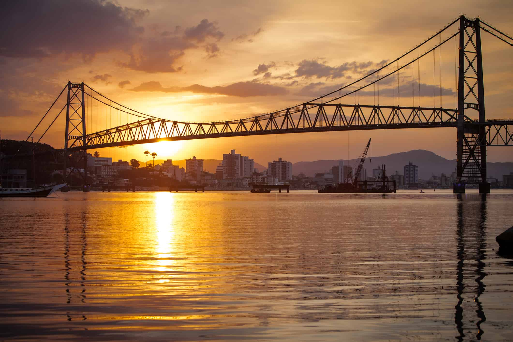
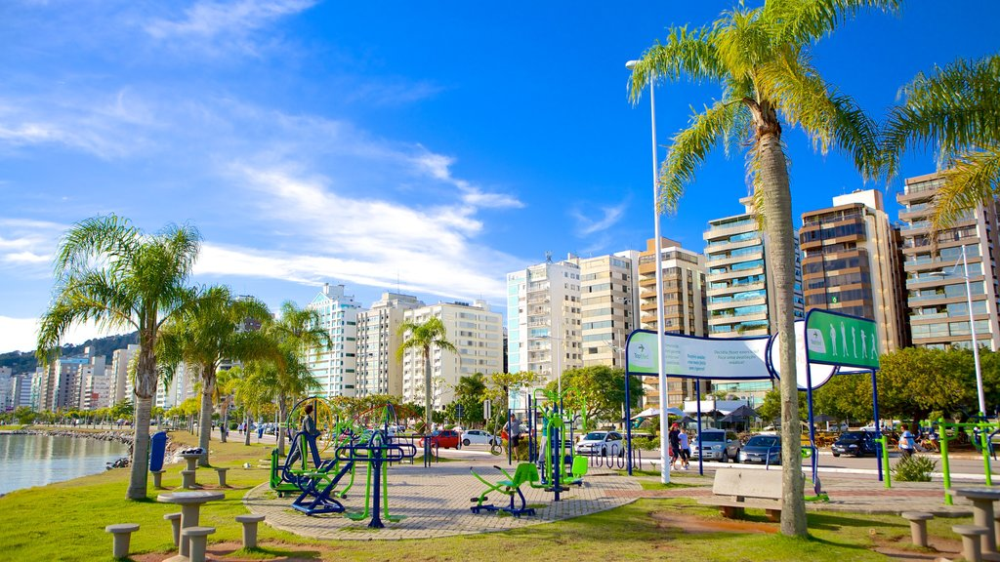
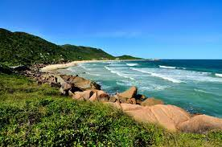
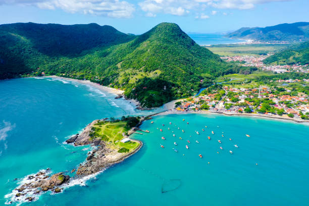

                
                
                

<li data-keyword="ponte hercílio luz" class="ui-sortable-handle" style=""></li><li data-keyword="beira mar norte" class="ui-sortable-handle" style=""></li>


<li data-keyword="cidade por do sol" class="ui-sortable-handle" style=""></li><li data-keyword="pontes" class="ui-sortable-handle" style=""></li><li data-keyword="praia lagoinha do leste" class="ui-sortable-handle" style=""></li><li data-keyword="praia da galheta" class="ui-sortable-handle" style=""></li>


<li data-keyword="praia da armação" class="ui-sortable-handle" style=""></li><li data-keyword="praia do forte" class="ui-sortable-handle" style=""></li><li data-keyword="cidade a noite" class="ui-sortable-handle" style=""></li>


                                                                                    